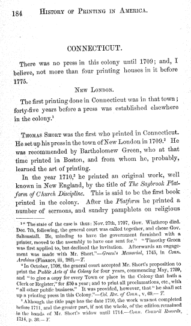

<div2 type="chapter">
<pb n="184"/>
<head>CONNECTICUT.</head>
<p>There was no press in this colony until 1709; and, I <lb/>
believe, not more than four printing houses in it before <lb/>
1775.</p>
<div3 type="section">
<head><smcap>New London</smcap>.</head>
<p>The first printing done in Connecticut was in that town; <lb/>
forty-five years before a press was established elsewhere <lb/>
in the colony.<ref target="n4.1"><sup>1</sup></ref>
<!-- note 1 here -->
</p>
<p><smcap>Thomas Short</smcap> was the first who printed in Connecticut. <lb/>
He set up his press in the town of New London in 1709.<ref target="n4.2"><sup>2</sup></ref>
<!-- note 2 here -->
He <lb/>
was recommended by Bartholomew Green, who at that <lb/>
time printed in Boston, and from whom he, probably, <lb/>
learned the art of printing.</p>
<p>In the year 1710,<ref target="n4.3"><sup>3</sup></ref>
<!-- note 3 here -->
he printed an original work, well <lb/>
known in New England, by the title of <i>The Saybrook Plat- <lb/>
form of Church Discipline</i>. This is said to be the first book <lb/>
printed in the colony. After the <i>Platform</i> he printed a <lb/>
number of sermons, and sundry pamphlets on religious <lb/>